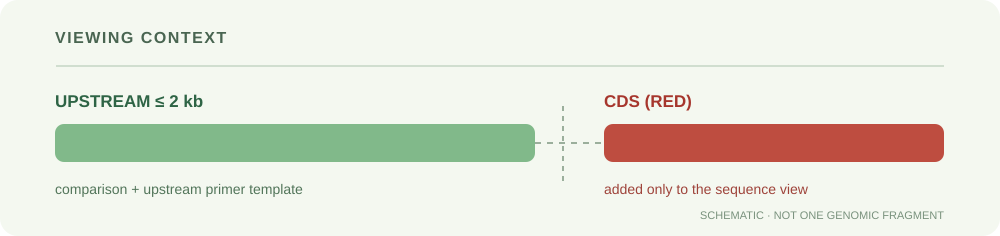

测序回来直接比
导入目标参照，再导入测序公司返回的 .ab1、.seq 或 FASTA 文件。AB1 可查看质量和峰图；没有质量值的文本不会伪造质量。也支持少量 Phred+33 FASTQ，不用于批量高通量测序分析。
测序公司返回的 AB1、SEQ 文件可直接拖入。选择目标参照，查看读段位置、测序质量和位点差异，再导出比对结果。
先粘贴或上传目标参照，再上传测序结果。第一条为参照，也可在文件卡片中点击“设为参照”。
适合 Sanger 短读段：参照中未测到的两端不计作缺失；内部缺口仍会显示。
原始序列保留在输入框，修剪仅用于本次比对。
最多 8 条序列。测序片段模式：参照 ≤ 12,000 nt，读段 ≤ 3,000 nt；全长模式：每条 ≤ 3,000 nt。总计算量仍受浏览器限制，较长参照请分批比对。
粘贴 FASTA 或上传文件，点击“开始比对”，这里会显示 DNAMAN 风格的逐位比对与差异概览。
ACGT · 浅红色标记 Q<20 · 峰图按文件原始方向显示 · 疑似双峰请结合原始报告复核
导入目标参照，再导入测序公司返回的 .ab1、.seq 或 FASTA 文件。AB1 可查看质量和峰图；没有质量值的文本不会伪造质量。也支持少量 Phred+33 FASTQ，不用于批量高通量测序分析。
测序片段模式将完整读段定位到参照上，未覆盖的两端不算缺失；不是双向拼接或基因鉴定。第一条为参照；一致率按双方均有碱基的位点为分母，仅 A/C/G/T 完全相同计为一致。高一致率仍需结合覆盖长度和质量判断。
修剪可选，原始序列不会被覆盖。手动修改序列或名称后，该条记录不再沿用原始质量和峰图；重新上传可恢复。支持导出对齐 FASTA、CLUSTAL 和含覆盖区间的文本报告。全程在本机浏览器计算。
本工具提供全局比对与测序片段定位（参照两端不罚分），多个序列以第一条为中心合并。匹配 +2、模糊兼容 0、不匹配 −1、缺口 −2。保留 IUPAC 模糊碱基，不自动判定杂合突变。复杂长片段、结构变异和发表级分析请用专业软件复核；不生成 DNAMAN 专有工程文件。
查询四个猕猴桃参考版本的同源候选，比较 CDS、mRNA 和上游区；确定模板后，一键进入载体引物设计与测序验证。
支持 Ach…、Actinidia…、Acc…、DTZ79_… 编号。一个版本显示最多 3 个蛋白同源候选，可手动切换；基因编号默认取最长 CDS 转录本。
也可直接比较您已有的 CDS、mRNA 或上游区序列。所有序列按基因转录方向的 5′→3′ 输入；上游区最多 2000 bp。支持单条 FASTA 或纯 DNA，空白版本不加入分析。
当前是模拟序列，只用于演示交互和引物计算，不代表这四个参考基因组的真实基因或同源关系。

CDS 从同版本基因组按注释拼接，并统一到转录方向。全长一致率将缺口和不确定碱基计入分母。
正向引物从模板第 1 位开始，反向引物覆盖模板末端；不会为了获得引物而悄悄缩短片段。CDS 和 mRNA 使用 cDNA 模板，上游区使用基因组 DNA。启动子查看区追加的红色 CDS 不纳入启动子引物产物。
引物为计算初筛候选：最近邻法估算 Tm，并筛查连续互补、同聚物和简化发夹茎；未进行完整二级结构热力学分析或全基因组特异性验证。其他版本的匹配检查仅限本页选中的序列。订购前请用 Primer-BLAST / Primer3 等结合实际模板复核。
高一致率不代表可任意替换材料。页面优先选择 White 模板（如有候选），您仍可切换；同一品种不同样本也可能存在变异。CDS、mRNA 与上游区分别比较，不合并成一个分数。
这里提取注释 CDS 起点之前最多 2000 bp，排除 CDS，自动对负链反向互补。它可能包含 5′UTR、邻近基因或重复区，不等同于已验证的 TSS 启动子。查看时在上游区之后追加拼接 CDS 并标红，明确标注边界；两段拼接仅供对照，不代表连续基因组片段。
mRNA 按外显子或 CDS＋UTR 注释拼接，去除内含子，使用 T 表示便于 cDNA 克隆。缺少转录本结构或 UTR 注释时明确提示，不自动补齐未注释的两端，也不宣称经验证的全长。
序列比较：全局 Needleman–Wunsch，匹配 +2、不匹配 −1、缺口 −2；全长一致率 = 明确相同碱基 / 全部比对列。N 不计为匹配。近似覆盖 = 无缺口配对碱基 / 原序列长度。
Tm：SantaLucia 最近邻参数、熵盐校正及 Mg/dNTP 钠当量；对称序列使用对称校正。默认条件可在上方修改。连续互补初筛阈值：3′ 端互补 <5 bp、发夹连续茎 <6 bp、同聚物 ≤5、两条引物 ΔTm ≤3 °C、GC 25–75%。
按实验室 Word 模板自动选择 CDS 或启动子，处理 ATG 与终止密码子，拼接正反向同源臂，并完成 Tm、GC、互补及酶切位点初筛。
粘贴序列CDS 和启动子可同时输入
选择载体系统自动套用模板规则
生成并复核复制引物或下载订购单
可粘贴 FASTA 或纯序列。构建融合蛋白时，系统按载体规则自动保留或去除 ATG / 终止密码子。
选择 pGreen-0800 时使用此序列；不会把 CDS 拼入启动子引物。
默认值来自您提供的 Word 模板。只有确认实际载体图谱与模板不同时才修改。
Tm 默认条件：单价盐 50 mM、Mg²⁺ 1.5 mM、总 dNTP 0.2 mM、寡核苷酸 250 nM；不等于实际 PCR 退火温度。
模板可自动拼接同源臂，但无法替代实际质粒图谱核对。融合载体尤其要确认阅读框、标签位置、载体批次及线性化位点。
系统根据模板选择 CDS 或启动子，再决定是否去除 ATG 和终止密码子；不会自动截短目标片段来迁就引物。
正向引物为“正向同源臂＋目标片段 5′端”，反向引物为“反向同源臂＋目标片段 3′端反向互补”。Tm 仅按退火区计算。
加载预期插入片段，再导入 AB1、SEQ 或 FASTA 查看覆盖区和差异。未覆盖位置、两端连接位点及完整质粒结构，仍需额外测序和图谱核对。
本页提供实验前的计算初筛，检查退火区 Tm、GC、同聚物、简化发夹与连续互补，并提示插入片段中的相关酶切位点。它不等同于全基因组特异性分析，也不能判断质粒实际图谱是否与模板一致；正式订购前请用实际载体序列、Primer3 / Primer-BLAST 和实验室 SOP 复核。